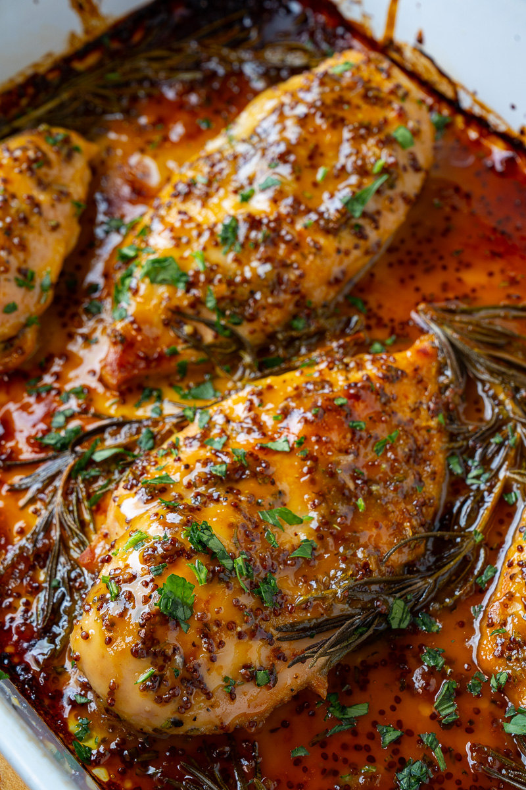

Baked Honey Mustard Chicken

Description
This honey mustard chicken is quick and easy to prepare.
Ingredients
- Skinless Boneless Chicken Breast Halves
- Seasonings
- Salt
- Pepper
- Dried Basil
- Paprika
- Dried Parsley
- Honey
- Mustard
Steps
- Preheat oven to 350 degrees F. Lightly grease a 9x13 inch baking dish with cooking spray.
- Season chicken breasts with salt and pepper. Place in the prepared baking dish.
- Combine honey, mustard, basil, paprika, and parsley in a small bowl; mix well. Pour 1/2 of the honey mustard mixture over chicken and brush to cover.
- Bake in the preheated oven for 30 minutes. Turn chicken pieces over and brush with remaining honey mustard mixture. Continue baking until chicken is no longer pink and juices run clear, 10 to 15 minutes more. An instant-read thermometer inserted into the center should read at least 165 degrees F.
- Let cool 10 minutes before serving.